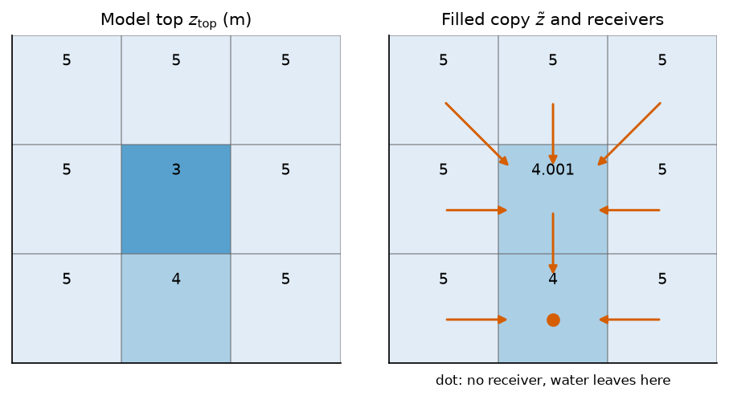

Routing on the mesh: the descent D#
Where the water of a drain goes next is a question of routing. A mesh top has pits that a DEM routed on its own grid never had, and a pit holds the water it receives. Routing needs a surface on which every cell has a way down. The model top is not that surface, and raising it would change the ground the solver sees. The descent \(D\) solves this on a copy: the copy is filled, the receivers of every cell are read on it, and it never goes back to the solver. The drain elevations, the streambeds and the reach tops keep reading \(z_\mathrm{top}\).
Notation of this page
Symbol |
Meaning |
Unit |
Set by |
|---|---|---|---|
\(z_\mathrm{top}\) |
model top, the land surface |
m |
|
\(n, m\) |
cell indices; \(\mathcal{N}(n)\) is the set of cells that share a face with \(n\) |
the grid, The mesh |
|
\(\tilde z\) |
the filled copy of the model top that \(D\) descends; never given to the solver |
m |
derived |
\(\epsilon\) |
rise per step of the priority flood inside a filled depression |
m |
1 mm, a constant of the code |
\(\eta\) |
tolerance of the flood: a cell within it of the flood level is raised too |
m |
derived from the relief |
\(r(n)\) |
receiver of cell \(n\), the one cell it drains to; \(-1\) when it has none |
derived |
|
\(\mathcal{N}_D(n)\) |
neighbours a cell may drain to: the cells sharing a node on a quad mesh, a face on any other |
|
|
\(D\) |
the descent of the model top |
built with every MODFLOW grid |
The flood#
\(D\) is the result of a priority flood [Barnes et al., 2014]. Its seeds are the cells of the rim of the routable domain and the fixed-head cells (Fixed heads: the sea, the rivers and the sides). The flood visits the cells in order of their filled level, from the lowest seed up. A cell \(m\) reached from a cell \(n\) of filled level \(\tilde z_n\) takes
The step \(\epsilon_m\) is 1 mm. When the run has a channel network (below), the step is 1 mm on the channel cells and 2 mm elsewhere, so that a filled flat climbs faster away from the channel than along it and its steepest descent heads into the channel.
The tolerance \(\eta\) is twice the drop under which the receiver graph sees no descent. With \(\Delta z\) the range of the top over the routable cells, in metres,
that is \(2 \times 10^{-9}\) m when the relief is under a metre, and \(2 \times 10^{-9}\) times the relief above. A cell within \(\eta\) of the flood level is raised too, so that no link of the receiver graph drops by less than the tolerance of that graph.
A lake is crossed, never used as a seed. Its cells keep their top and are flooded to their spill level like any depression, so the lake drains through its outlet and the cells below a dam keep draining downstream. The role of a sink belongs to the walks that read \(D\): they stop at the first lake cell.
In the code: build_descent.
The receivers#
On the filled copy, the receiver \(r(n)\) of a cell is its steepest-descent neighbour [O'Callaghan and Mark, 1984]. Only the neighbours lower by more than the tolerance \(\eta_r = 10^{-9} \max(\Delta\tilde z,\ 1)\) m count, where \(\Delta\tilde z\) is the range of the filled copy:
The filled range is a little wider than the range of the top, and the factor 2 of (33) covers that difference. The distance is between cell centres, so a diagonal step on a square grid is \(\sqrt 2\) cells long and wins only when it is steeper.
The neighbours \(\mathcal{N}_D(n)\) are the cells that share a node with \(n\) on a quad mesh (diagonals included, as in the D8 descent) and the cells that share a face on any other mesh. A seed keeps its steepest descent too, so that an accumulation passes through a fixed-head cell. The walks that must end where water leaves the model read the receiver with \(-1\) on the fixed-head cells.
Every link of \(D\) descends, so the receiver chains never cycle and every routable cell reaches a seed. The build refuses a \(D\) where a cell has no way down.
A pit, by hand#
A 3 by 3 grid of squares of 10 m, with a pit in the middle and a lower cell on the south side. The seeds are the eight rim cells, and a seed keeps its top. The flood starts at the lowest, the south cell at 4 m, and reaches the centre. The centre is below the flood level, so it takes \(4 + 0.001\) m.

Fig. 51 The model top, and the filled copy with the receiver of each cell, from one
call of build_descent. The five northern cells drain to the centre, now
the lowest neighbour. The two southern corners drain to the south cell: it
drops 1 m over 10 m, the centre 0.999 m over 14.1 m. The centre drains south.
The south cell has no lower neighbour, and water leaves the model there. The
pit is raised on \(D\) only: its top in the solver stays 3 m.#
The channel tree#
When the run generates a stream network (see Streams and the water mover), \(D\)
follows it. That network was traced on the D8 pointer of the DEM routing. On the
mesh, a cell that holds a pixel of it is a channel cell, and it is pinned to the
next channel cell along the network. A pinned cell drains to its pin, adjacent or
not, even where the top climbs along the channel. Without the pins, \(D\) would
descend its own flats by flood order and run beside the channel. A cell outside
the channel keeps its steepest descent. A run with
geographic.river_network.enabled off has no pinned cell.
What D is used for#
Stream reaches and drainage routing (Streams and the water mover).
Accumulation of the outflow of each cell (Where the water table reaches the surface).
The flow direction figure, and the foot of each dam read by the heads rule of the stream criterion.
Both MODFLOW solvers build it at every run and store it with the mesh. A run stored without it gets one rebuilt on read from the stored top, without pins, fixed-head seeds or lakes, and the log says so. MODFLOW-NWT seeds \(D\) on the cells it writes as a fixed head, and builds no stream head and no lake.
The graph of the stream criterion#
The stream-network criterion (Downslope distance between two networks) does not read \(D\). It floods its own copy of the model top with the same flood, and reads its receivers with (34). The two answer two questions: \(D\) routes water in the model, the criterion graph measures distances on the top. They differ in these ways.
The descent \(D\) |
The criterion graph |
|
|---|---|---|
Seeds |
the rim of the routable domain and the fixed-head cells |
the border of the active domain |
Lakes |
crossed, flooded to their spill level |
part of the graph, removed from the supports of the means |
Channel |
pinned to the generated network |
free |
Raised cells |
below the flood level, or within \(\eta\) above it |
below the flood level |
Neighbours |
D8 on a quad mesh |
D8 on a quad mesh unless |
Both use the step \(\epsilon\) of 1 mm off a channel. The flood and the receivers always read the same neighbour graph: a flood that walked eight neighbours while the receivers read four would leave filled cells that spill over a diagonal the receivers cannot take.
Assumptions#
Water leaves a cell by one receiver (single flow direction).
The filled copy is a computation. It changes no head and no elevation the solver reads.
Limits#
Meshes without diagonals. On a mesh whose faces are not all quadrilaterals, the neighbours are the cells sharing a face, whatever the key asks.
A run stored before \(D\) was kept routes on a \(D\) rebuilt without pins, fixed-head seeds or lakes.
Parameters of this page#
Checked by#
The tests that import the code of this page. The box is generated: a new test appears here on the next build.
25 test files import hydromodpy.core.descent, hydromodpy.core.depression_filling, hydromodpy.solver.modflow_common.mesh_descent. Their names say what they check.
contract: 1
- Boussinesq descent routes like whitebox.
unit: 24
- A gauge snaps only when asked. calibration
- A cell a hair above the flood is raised. core
- A flat beside the channel drains into it. core
- A stored descent rebuilds its graph from two arrays. core
- Depression filling. core
- Every cell of the descent drains to a seed. core
- The descent takes diagonals on quads and faces elsewhere. core
- Without pins the descent is the plain flood. core
- Depression map. display
- A stored descent reads back as it was written. results
- Accumulation rebuilt on read. results
- The dam foot is stored with the descent. results
- Discharge routing. solver
- The build hands the descent to the networks. solver
- The build leaves the descent with the dam feet. solver
- The dam foot of a declared spillway draws the reach below the dam. solver
- The dam foot of each lake is kept with the descent. solver
- The descent follows the channel tree a. solver
- The descent sidecar reads back what the build wrote. solver
- The discharge is routed on the descent. solver
- The extractors store the descent the build saved. solver
- The graph says what it can drain. solver
- The nwt build keeps its descent. solver
- The solver mesh descent crosses inactive lakes. solver
In the code#
What |
Where |
|---|---|
The flood, the receivers, the pins |
|
The flood of the criterion |
|
\(D\) on a solver mesh, the channel pins |
|
\(D\) in the run store |
|